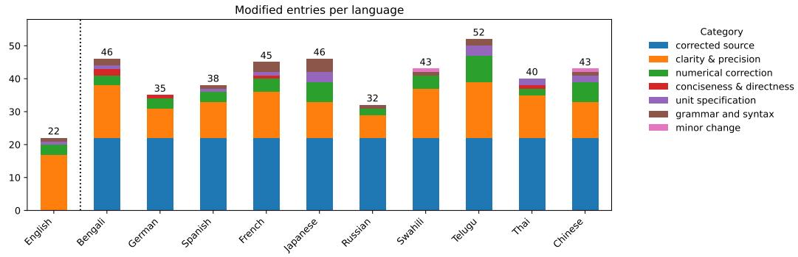
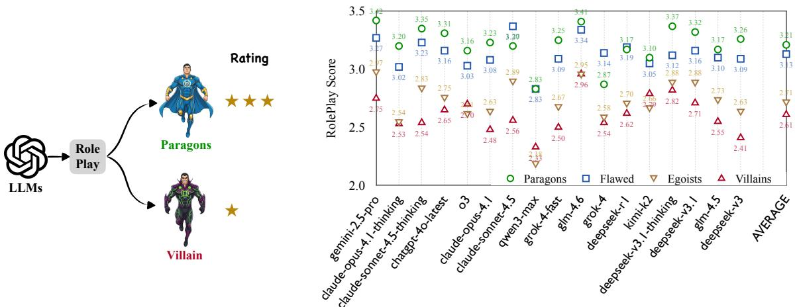
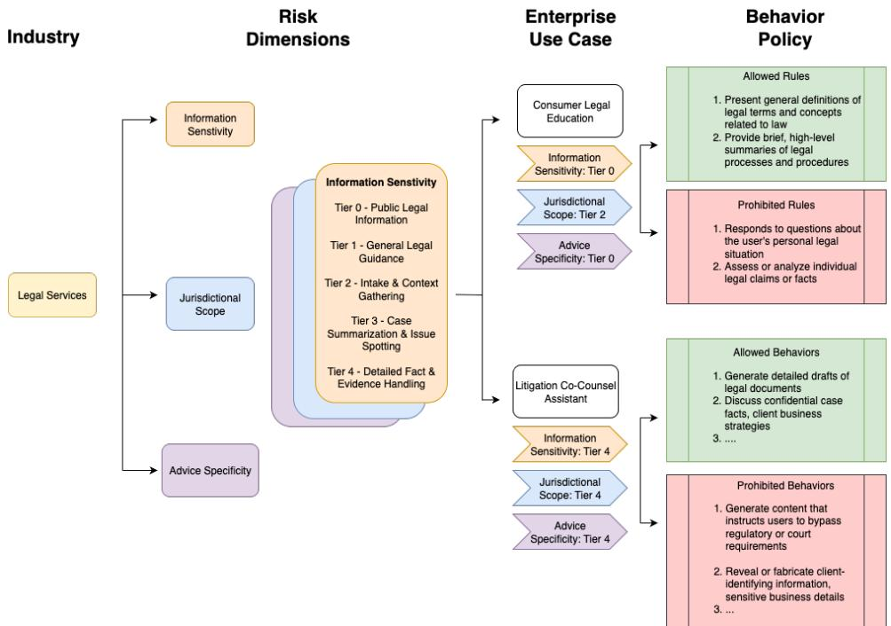
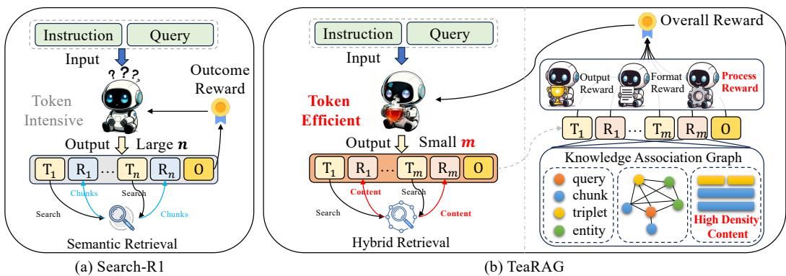

📝 微观深度解读
2025-11-08
为您精选了 6 篇高质量 AI 论文的深度解读
大型语言模型
多语言数学推理
翻译错误
评估基准
质量保证
推荐分数: 0.530
📖 简介：本文提出了一种针对大型语言模型（LLMs）在多语言数学推理任务中表现差距的解决方案。通过自动质量保证和规范化答案提取，论文修正了评估基准中的翻译错误和提取缺陷，显著缩小了不同语言间的性能差距。研究结果表明，原有的语言差距主要源于评估过程中的系统性错误，而非模型能力不足。

查看详细解读 →
语言生成
语言识别
部分枚举
密度界限
拓扑性质
推荐分数: 0.519
📖 简介：本文提出了一种新的理论框架，研究在部分枚举模型下的语言生成与识别问题。通过证明生成算法在对手提供的子集密度至少为α/2的紧界限，解决了语言生成中的有效性与覆盖率之间的权衡。此外，建立了拓扑学视角，明确了语言识别的条件与拓扑性质的关系，深化了对学习模型的理解。
⚠️ 核心思路图片提取失败：未找到图片
查看详细解读 →
选择性记忆策略
双层内存架构
长文档处理
内存节省
语言模型
推荐分数: 0.461
📖 简介：本文提出了BudgetMem框架，解决了大语言模型在处理长文档时的计算和内存限制问题。通过学习选择性记忆策略和双层内存架构，BudgetMem实现了72.4%的内存节省，同时仅导致1.0%的F1分数下降，显著提高了长文档处理的效率和性能，为资源受限环境下的语言理解提供了新方案。

大型语言模型
道德角色扮演
反派角色
安全对齐
创作保真度
推荐分数: 0.447
📖 简介：本文提出了Moral RolePlay基准，旨在评估大型语言模型（LLMs）在角色扮演中对道德复杂性（从道德模范到反派）的表现。研究发现，LLMs在模拟反派角色时表现不佳，尤其在展现欺骗和操控等特质时，反映出安全对齐与创作保真度之间的矛盾。这一工作为未来的对齐方法提供了重要启示。

查看详细解读 →
多轮对话
大型语言模型
行为政策
合规性评估
对齐方法
推荐分数: 0.428
📖 简介：本文提出了PLURALISTIC BEHAVIOR SUITE (PBSUITE)，一个动态评估框架，旨在系统性地评估大型语言模型（LLMs）在多轮对话中遵循定制行为政策的能力。研究发现，尽管LLMs在单轮交互中表现良好，但在多轮对话中合规性显著下降，最高可达84%的失败率，从而揭示了当前对齐方法的局限性。

查看详细解读 →
代理式检索增强生成
令牌效率
知识关联图
个性化PageRank
迭代过程感知直接偏好优化
推荐分数: 0.423
📖 简介：本文提出了TeaRAG框架，旨在提升代理式检索增强生成（RAG）系统的令牌效率。通过结合知识关联图和个性化PageRank进行高密度检索，以及引入迭代过程感知直接偏好优化（IP-DPO）来简化推理过程，TeaRAG在保持准确性的同时显著减少了计算开销，输出令牌减少61%至59%。该框架在多个数据集上表现出色，推动了RAG领域的研究进展。

查看详细解读 →